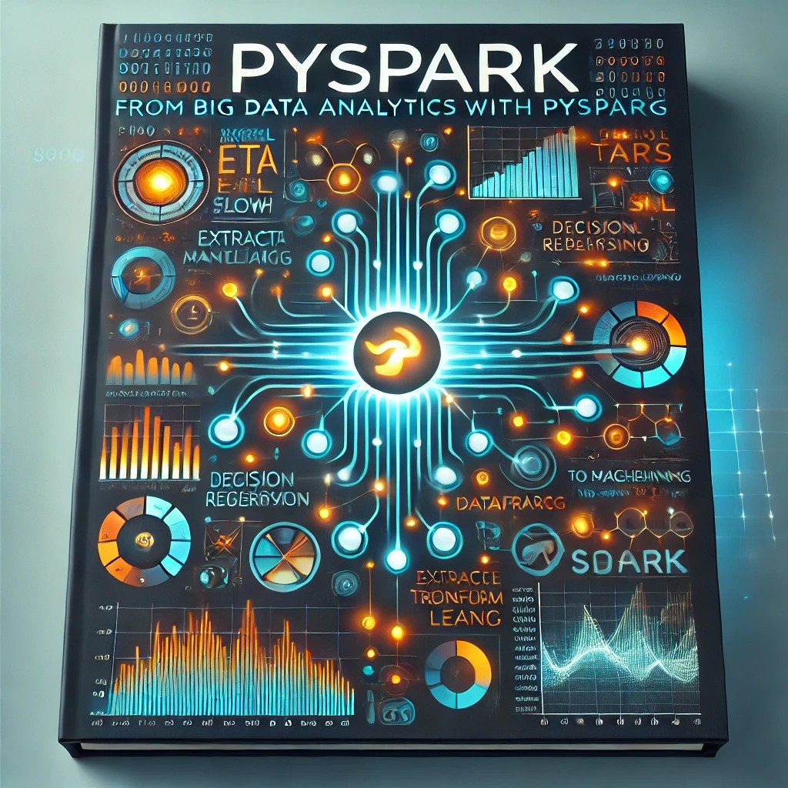

March 20, 2024
This project delves into the analysis of credit card fraud using a large dataset of over 1.8 million transactions.
The primary goal is to uncover patterns that can aid in identifying and preventing fraudulent activities in the banking sector.
Through a combination of exploratory data analysis (EDA), statistical analysis, and data visualization techniques using SAS, the project uncovers valuable insights about the factors influencing fraud.
This project showcases the application of Natural Language Processing (NLP) and Machine Learning to classify text
messages as spam or ham (non-spam). Using the SMS Spam Collection Dataset from the UCI Machine Learning Repository, I
implemented a Random Forest Classifier to detect spam messages effectively. The process involved data preprocessing with
NLTK, feature engineering, and vectorization using TF-IDF to convert text into numerical data. Multiple models were
evaluated using hyperparameter tuning and cross-validation, with the final model achieving an impressive 99% accuracy.
Click below to explore how NLP techniques and machine learning models can be leveraged to improve spam detection.

In this project, I leverage the power of PySpark to process and analyze large datasets efficiently. From Extract,
Transform, and Load (ETL) operations to SQL-based business analysis, this project showcases how big data tools can drive
data-driven decision-making. Using PySpark DataFrame API, I perform data cleaning, aggregation, and visualization,
uncovering key business metrics through histograms, boxplots, bar charts, and pair plots with Seaborn and Matplotlib.
Additionally, I implement machine learning models, including Linear Regression, Decision Trees, and Multilayer
Perceptron Classification, to predict business trends and optimize operations. Dive in to explore how big data analytics
can extract actionable insights and enhance predictive capabilities!
This project showcases my proficiency in statistical analysis and data visualization using R, highlighting key
techniques such as descriptive statistics, hypothesis testing, and exploratory data analysis. Through a series of R
Markdown code chunks, I demonstrate how to analyze datasets, create histograms, boxplots, and empirical cumulative
distribution functions (ECDFs), and perform normality tests like the Shapiro-Wilk test. The project also includes an
ANOVA test to compare means across different groups, illustrating my ability to derive meaningful insights from data. By
exploring real-world examples—such as calorie consumption across months and tree measurements—I provide a clear,
step-by-step guide to handling and interpreting data programmatically. Click the link to dive into the full analysis and
see how R can transform raw data into actionable knowledge!